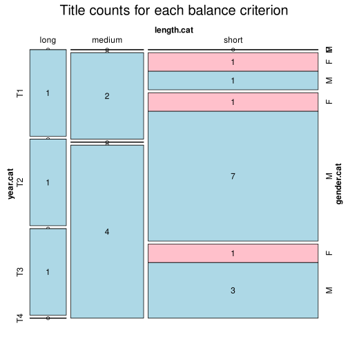

Click on a column heading to sort. Click on a text identifier to read the text (may not work in older browsers).
| Identifier | Encoding | Pages | Words | (Size) | Date (Slot) | Title | Author | Sex | Reprints |
|---|---|---|---|---|---|---|---|---|---|
| POR0003 |
eltec-1 | 131300 | (long) | 1848 (T1) | O Monge de Cister | Herculano, Alexandre (1810-1877) | M | high | |
| POR0101 |
eltec-1 | 55 | 9413 | (short) | ? (T3) | Cabral, Guilherme Read (1821-1897) | M | medium | |
| POR0102 |
eltec-1 | 9120 | (short) | 1906 (T3) | Lisboa no ano 2000 | Matos, Melo de (?-?) | M | unspecified | |
| POR0103 |
eltec-1 | 68424 | (medium) | 1906 (T4) | O trovador da Infanta | Oliveira Mascarenhas, Joaquim Augusto de (1847-1918) | M | low | |
| POR0104 |
eltec-1 | 4280 | (short) | 1889 (T3) | Uma Récita do Roberto do Diabo | Machado, Júlio César (1835-1890) | M | unspecified | |
| POR0105 |
eltec-1 | 30607 | (short) | 1907 (T4) | Tríplice Aliança | Azevedo, Raul de (1875-1957) | M | low | |
| POR0106 |
eltec-1 | 58660 | (medium) | 1909 (T4) | Miss Kate | Velho, Cosme (1848-1911) | M | low | |
| POR0107 |
eltec-1 | 7989 | (short) | 1899 (T3) | Aventuras do sr. Cryptogamo | Pinto, Alfredo de Morais (1851-1921) | M | unspecified | |
| POR0108 |
eltec-1 | 15046 | (short) | 1863 (T2) | Luz coada por ferros | Plácido, Ana (1831-1895) | F | low | |
| POR0109 |
eltec-1 | 4241 | (short) | 1890 (T3) | Severina | Torresão, Guiomar (1844-1898) | F | unspecified | |
| POR0110 |
eltec-1 | 19420 | (short) | 1914 (T4) | O juramento da condessa Esther | Almeida, Fialho de (1857-1911) | M | unspecified | |
| POR0112 |
eltec-1 | 8266 | (short) | 1888 (T3) | O Engeitado | Braga, Alberto Alberto Leal Barradas Monteiro (1851-1911) | M | unspecified | |
| POR0113 |
eltec-1 | 122198 | (long) | 1878 (T2) | O Primo Basílio | Eça de Queirós, José Maria de (1845-1900) | M | high | |
| POR0114 |
eltec-1 | 103676 | (long) | 1896 (T3) | A Mulata | Dias, Carlos Malheiro (1875-1941) | M | high | |
| POR0115 |
eltec-1 | 59934 | (medium) | 1872 (T2) | Livro de consolação | Castelo Branco, Camilo (1825-1890) | M | high | |
| POR0116 |
eltec-1 | 12953 | (short) | 1879 (T2) | O Romance da Rainha Mercedes | Pimentel, Alberto (1849-1925) | M | low | |
| POR0117 |
eltec-1 | 16788 | (short) | 1914 (T4) | Por Bom Caminho | O'Neil, Maria (1873-1932) | F | low | |
| POR0118 |
eltec-1 | 48481 | (short) | 1898 (T3) | A descoberta e conquista da Índia pelos portugueses | Lobo de Ávila, Artur (1855-1945) | M | low | |
| POR0119 |
eltec-1 | 69128 | (medium) | 1901 (T4) | A Cidade e as Serras | Eça de Queirós, José Maria de (1845 — 1900) | M | high | |
| POR0120 |
eltec-1 | 33605 | (short) | 1905 (T4) | Dramas da Corte | Castro, Alberto Osório de (1868-1946) | M | low | |
| POR0121 |
eltec-1 | 60966 | (medium) | 1876 (T2) | O selo da roda | Ivo, Pedro [ Carlos Lopes ] (1842-1906) | M | low |